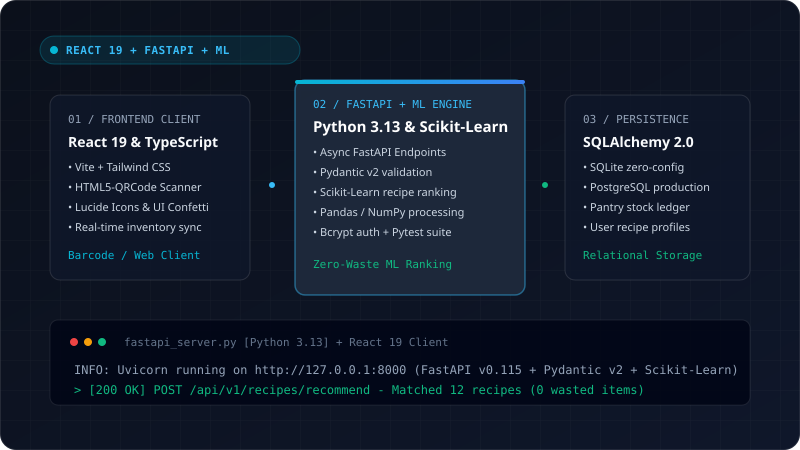

Smart Kitchen Inventory & Recipe Assistant
Full-stack intelligent pantry management and ML-powered zero-waste recipe assistant with real-time barcode/QR ingestion.
A. PROBLEM
Households discard consumable groceries due to poor shelf-life tracking and struggle to compose balanced meals strictly from fragmented leftover pantry stock.
B. ARCHITECTURE & APPROACH
Built a production-grade full-stack AI system: high-performance FastAPI backend (Python 3.13) paired with a responsive React 19 + TypeScript frontend. Integrated Scikit-Learn & Pandas matching pipelines with SQLite/PostgreSQL persistence and HTML5-QRCode scanning.
C. KEY CAPABILITIES IMPLEMENTED
- Automated QR/Barcode pantry item scanning & expiry tracking
- ML recipe compatibility ranking powered by Scikit-Learn & Pandas
- Type-safe Pydantic v2 schemas with SQLAlchemy 2.0 ORM persistence
- Secure Bcrypt user authentication & comprehensive Pytest suite
React 19
TypeScript
FastAPI (Python 3.13)
Scikit-Learn
SQLAlchemy 2.0
Pydantic v2
PostgreSQL / SQLite
Tailwind CSS
HTML5-QRCode
Pytest
View Repository on GitHub
Source of Truth: Active GitHub Codebase